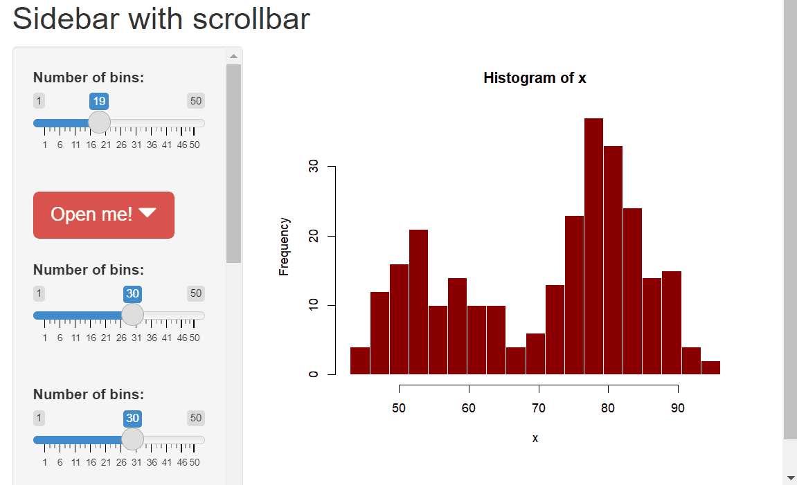
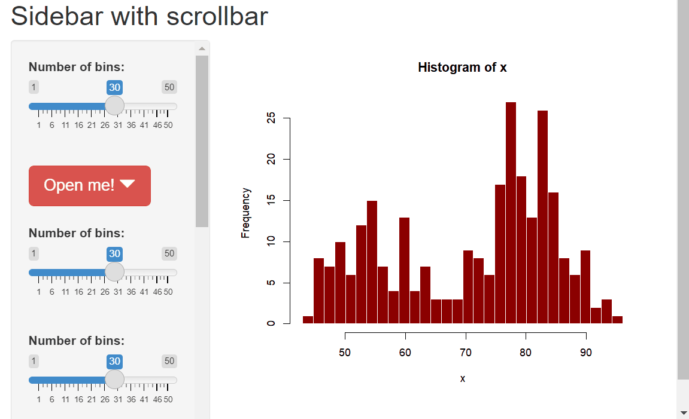

Scrollbar for the Shiny sidebar
Posted on June 17, 2022
by Stéphane Laurent
It is easy to have a scrollbar for the sidebar of a Shiny app: one just
has to use the CSS height: 90vh; overflow-y: auto;:
library(shiny)
library(shinyWidgets)
ui <- fluidPage(
titlePanel("Sidebar with scrollbar"),
sidebarLayout(
sidebarPanel(
style = "height: 90vh; overflow-y: auto;",
sliderInput("bins", "Number of bins:", min = 1, max = 50, value = 30),
br(),
dropdown(
tags$h1("A very large dropdown"),
status = "danger",
size = "lg",
label = "Open me!",
width = "500px"
),
br(),
sliderInput("bins2", "Number of bins:", min = 1, max = 50, value = 30),
br(),
sliderInput("bins3", "Number of bins:", min = 1, max = 50, value = 30),
br(),
sliderInput("bins4", "Number of bins:", min = 1, max = 50, value = 30),
br(),
sliderInput("bins5", "Number of bins:", min = 1, max = 50, value = 30),
br(),
sliderInput("bins6", "Number of bins:", min = 1, max = 50, value = 30),
br(),
sliderInput("bins7", "Number of bins:", min = 1, max = 50, value = 30),
),
mainPanel(
plotOutput("distPlot")
)
)
)
server <- function(input, output) {
output[["distPlot"]] <- renderPlot({
x <- faithful[, 2]
bins <- seq(min(x), max(x), length.out = input[["bins"]] + 1)
hist(x, breaks = bins, col = "darkred", border = "white")
})
}
shinyApp(ui = ui, server = server)
But, as you can see, there is an issue with the
shinyWidgets::dropdown: when one opens it, the part outside the
sidebar is hidden. Here is a JavaScript solution for this issue:
library(shiny)
library(shinyWidgets)
js <- '
$(document).ready(function(){
$("[id^=sw-content-]").on("shown", function(){
$(".sidebar").css({"overflow-y": "visible"});
}).on("hidden", function(){
$(".sidebar").css({"overflow-y": "auto"});
});
});
'
ui <- fluidPage(
tags$head(tags$script(HTML(js))),
titlePanel("Sidebar with scrollbar"),
sidebarLayout(
sidebarPanel(
class = "sidebar",
style = "height: 90vh; overflow-y: auto;",
sliderInput("bins", "Number of bins:", min = 1, max = 50, value = 30),
......
I find the native HTML scrollbars a bit ugly. It is possible to customize them: Styling scrollbars in CSS.